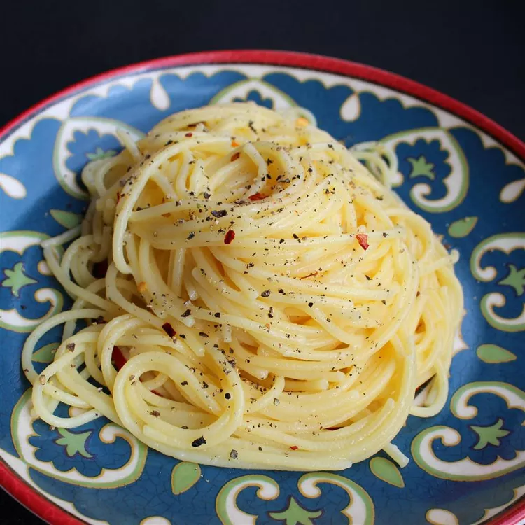

Cacio e Pepe is a classic Roman pasta dish made with just cheese and black pepper. Simple yet flavorful, it combines Pecorino Romano and freshly cracked pepper with starchy pasta water to create a creamy, peppery sauce that clings perfectly to the noodles. The result is a rich, comforting dish that highlights the beauty of minimal ingredients done right.
Bring a large pot of lightly salted water to a boil. Cook spaghetti in boiling water, stirring occasionally, until tender yet firm to the bite, about 12 minutes. Reserve 1 cup cooking water, then drain spaghetti.
Heat olive oil in a large skillet over medium heat. Cook and stir garlic and pepper in hot oil until fragrant, 1 to 2 minutes. Add cooked spaghetti and Pecorino Romano cheese. Ladle in 1/2 cup reserved cooking water; stir until cheese is melted, about 1 minute. Stir in more cooking water as needed, 1 tablespoon at a time, until sauce coats spaghetti, about 1 minute more.
You can substitute butter for olive oil.
Adjust the amount of cooking water added in Step 2 for a thicker or thinner sauce. If you add too much water, add some more cheese
I add flavor-enhancing ingredients like pancetta, depending on my main dish. I always experiment when creating food